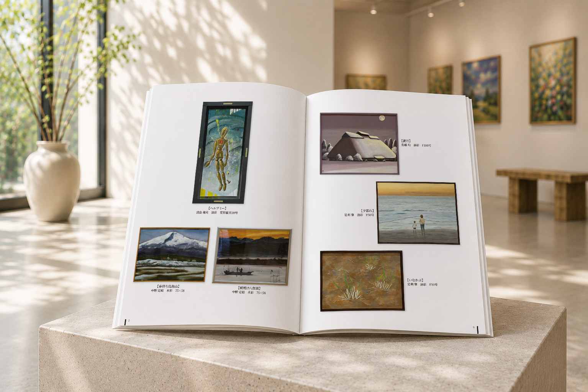
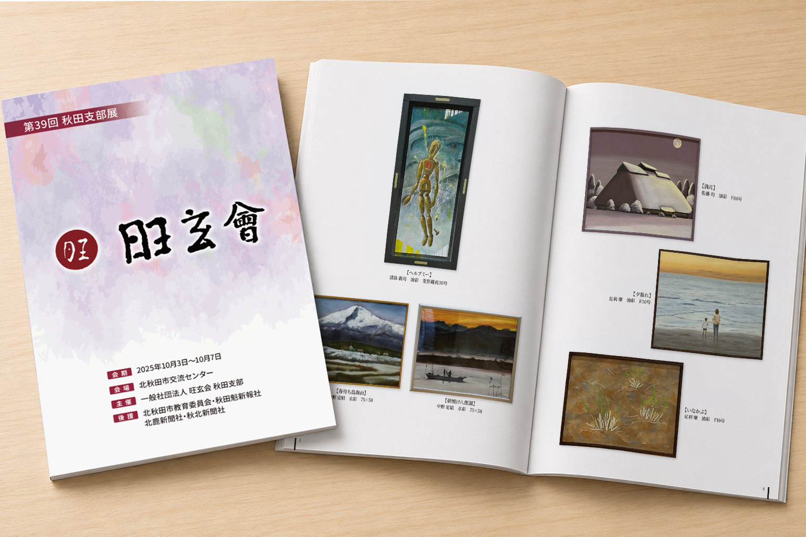

Works 印象を整える
出品作品の魅力を、
静かに引き立てる一冊に。
作品写真と作者情報をご支給いただき、
作品そのものが主役になるよう、
余白を活かした構成で冊子を制作しました。
作品ごとの縦横比や点数に合わせて配置を調整し、
展覧会の記録として落ち着いて見返せる一冊にまとめています。

ご相談から完成まで
-
01
ご要望
支給された作品写真と作者情報をもとに、
展覧会の記録冊子を制作したい。 -
02
設計・制作
作品ごとの大きさや縦横比、
掲載点数に合わせて、
写真と作品情報の配置を調整しました。 -
03
完成
作品ごとの大きさや縦横比、
掲載点数に合わせて、
写真と作品情報の配置を調整しました。
完成デザイン
案件情報
- 業種
- 術団体・展覧会
- 制作物
- 作品記録冊子
- 仕様
- 全20ページ
- 掲載内容
- 挨拶文・出品者一覧・作品写真・集合写真・会場風景
- 担当範囲
- デザイン・画像加工・編集
- 支給素材
- 作品写真・作者名・作品情報・会場写真
- 使用ツール
- Illustrator / Photoshop / InDesign
- 制作期間
- 14日
作品そのものを主役に、余白と配置を丁寧に調整。
一点ごとの魅力と、展覧会全体の記憶が残る冊子を目指しました。

大切な作品や活動を、
見返したくなる一冊にまとめられます。
作品写真や原稿をもとに、
展覧会記録や作品集として残せる構成とデザインを
一緒に考えます。